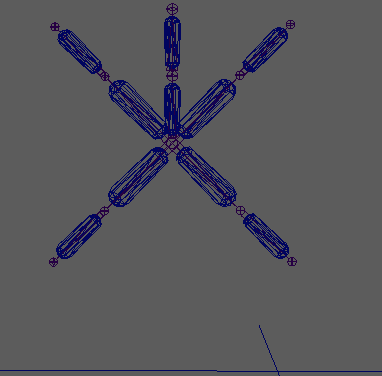

注： Bullet 布偶不支持收拢原始骨架。
从骨架创建动力学布偶：
- 将骨架添加到场景中。
- 选择骨架的根关节。
- 选择“Bullet > 从骨架创建布偶”(Bullet > Create Ragdoll from Skeleton) >
 。
。
- 调整以下参数：
- 胶囊：骨骼长度比(Capsule: Bone Length Ratio)
- 胶囊半径：长度比(Capsule Radius: Length Ratio)
- 除了胶囊参数，您还可以调整用来配置约束的其他参数。更改“关节名称分隔符”(Joint Name Separator)设置，以修改命名胶囊时显示在关节名称之间的字符。该工具可创建一个与骨架骨骼对应的动力学刚体胶囊网络，并将其与同关节属性匹配的约束连接。
注： 胶囊和约束的名称基于骨架中的关节的名称。此命名约定使工具开发人员更容易编写导出器或装备脚本，以将布偶运动与标准骨骼动画组合。
- 在大纲视图中，选择解算器节点。
- 在属性编辑器 BulletSolverShape 选项卡的“解算器显示”(Solver Display)部分中，激活“碰撞形状”(Collision Shape)选项。如果您不希望解算器近似落到地面上，请激活“地平面”(Ground Plane)。
- 按下“播放”(Play)以观看布偶胶囊近似收拢。
